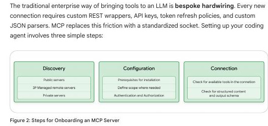

協定讓 Agent 成為
可治理的虛擬團隊
MCP 消除工具接線債，A2A 形成跨邊界分工，A2UI 安全呈現互動介面。
下一步：畫出工具、Agent、UI 與交易邊界，再為每條邊界選對協定。

OPTION C · left-bottom outline kicker keeps the right-side cue
MCP 消除工具接線債，A2A 形成跨邊界分工，A2UI 安全呈現互動介面。

先從 registry 找 server，再設定 scope、認證與授權，最後執行 handshake。